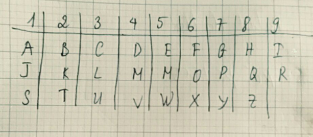
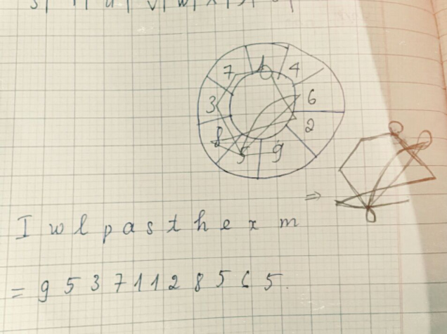
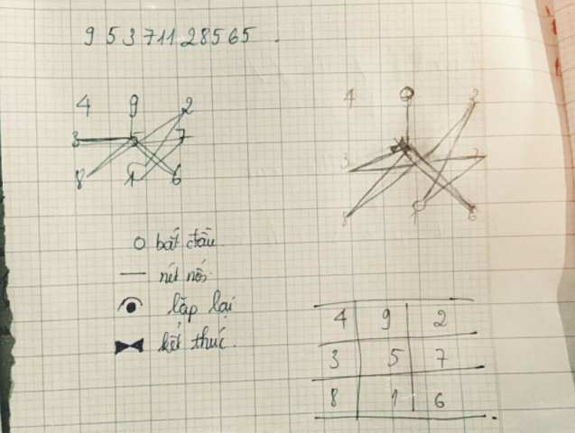

Sigil là gì? Cách tạo sigil như thế nào?
Sigil là gì?
Mọi người thắc mắc Sigil là gì : Sigil là một loại biểu tượng được sử dụng trong phép thuật, thường được dùng để chỉ một loại chữ ký hình ảnh của Jiin hoặc thực thể khác. Sigil có thể giúp bạn đạt được mục tiêu đề ra như sigil tình yêu, sigil học tập… Trong cách sử dụng hiện đại, nhất là trong bối cảnh ma thuật hỗn loạn, sigil đề cập đến một đại diện mang tính biểu tượng về kết quả mong muốn của học viên.
Mộ số mẫu sigil may mắn
Dưới đây là Mộ số mẫu sigil may mắn mới nhất hãy cùng tham khảo nhé :
Sigil là gì có hại không ?
Con dấu là một biểu tượng được tạo ra với mục đích biến hiện thực thành ý chí. Tất cả các dấu hiệu được mã hóa cho một mục đích cụ thể, chẳng hạn như để thu hút đối tác lãng mạn, củng cố ranh giới, thịnh vượng về tài chính và chữa lành tâm hồn bên trong của bạn. Khả năng là vô tận. Vậy Sigil là gì có hại không câu trả lời là không nhé.
Ý nghĩa của sigil
Ý nghĩa của sigil là một biểu tượng được sử dụng trong phép thuật. Nó có nghĩa là giúp bạn biến hiện thực thành bất cứ điều gì bạn muốn. Tất cả các con dấu đều được mã hóa cho một mục đích cụ thể: thịnh vượng về tài chính, chữa lành tâm hồn hoặc thu hút khán giả.
Sigil là gì cách vẽ sigil lưu ý khi vẽ cách kích hoạt sigil khong muốn dùng sigil nữa thì làm gì ? sẽ được giải đáp tiếp theo nhé !
Hướng dẫn cách tạo sigil đơn giản nhanh chóng
Bước 1: Viết dòng chữ mà bạn mong muốn ra giấy (càng ngắn càng tốt). Dưới đây là hướng dẫn cách tạo sigil học tập mới nhất
Bước 2: Loại bỏ các ký tự trùng nhau, chỉ để lại những chữ cái đại diện.
Bước 3: Tra chữ thuộc số nào qua bảng dưới đây.

Bước 4: Xem hình vẽ để biết thêm chi tiết.
Cách 1:

Cách 2:

Cách 3: Lấy các chữ đã tối giản ở cách 1 lồng vào nhau đến khi thấy phù hợp là được.
Một số mẫu cách tạo sigil khác
Dưới đây là tổng hợp Một số mẫu cách tạo sigil khác mới nhất hãy cùng tham khảo và cho ý kiến :


Hướng dẫn cách sử dụng sigil magic
Có rất nhiều Hướng dẫn cách sử dụng sigil magic, dưới đây là một số cách sử dụng sigil phổ biến:
Mong rằng những thông tin mà chúng tôi chia sẻ trên đây đã giúp bạn biết sigil là gì rồi. Cảm ơn bạn đã quan tâm theo dõi bài viết của chúng tôi!